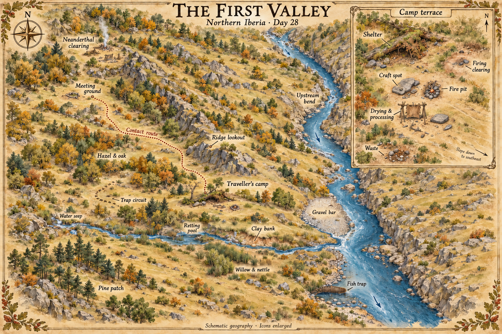

Valley Map

This is the author’s spatial reference for the fictional valley in World, showing the camp and known landmarks at the end of Day 28. It is not a map the traveller has drawn, a real archaeological site, or a surveyed plan. Compass bearings, the arrangement of resource patches and the walking allowances below are new setting choices made on 3 October 2026. They consolidate the earlier descriptions without adding possessions or events.
The illustration provides the visual overview. The written relationships below govern continuity when an enlarged icon or decorative label is ambiguous. Terrain and ownership beyond the explored area remain unknown. R15 supports the broad regional landscape mosaic, not these particular locations.
Orientation and water
North is up. The larger river runs generally north to south through the eastern part of the map. The smaller stream runs west to east and joins it below the camp terrace. Both the traveller’s camp and the Neanderthal clearing are on the western side of the larger river. The established contact route requires no main-river crossing, boat, bridge or wading invention.
The camp sits north of the small stream, on a sheltered, drained terrace west of the main river. Ground around the shelter falls towards the southeast. Its entrance faces broadly southeast. The familiar Day 1 view looks out towards the east/southeast: the shelter is on the left and the valley drops away to the right. Other cameras can reverse screen positions while retaining these bearings.
The drinking-water seep is uphill and west/southwest of camp, at the upstream end of the small-stream route. The retting/rinsing pool is farther east and downstream of that collection point. Retting, clay work and dirty animal processing never move upstream of drinking collection. Appearance is not a water-safety test; Hot-Rock Boiling still applies.
The fish cage is at the accessible western margin of the larger river, just downstream of the tributary confluence. It is anchored in a shallow, locally sheltered margin and can be retrieved from stable footing. Its cylinder, inward entrance funnel and removable rear cap remain the design in Woven Fishing Trap. Neither an illustration nor this map creates a weir across the river. Day 22’s opposite-bank wolf is a transient sighting, not a permanent predator landmark.
Landmarks and travel allowances
These are provisional one-way allowances for a cautious, lightly loaded traveller from camp in ordinary daylight. They are author budgeting assumptions, not timings measured in the narrative. A loaded return, gathering, a trap check, a concealment pause or watching people adds time; poor weather and vigilance can lengthen every trip. Do not derive metres from the graphic.
| Landmark | Fixed relationship | One-way allowance / use |
|---|---|---|
| Water seep | West/southwest, upstream on the small-stream route | 5–10 minutes; collection and treatment are additional work |
| Retting pool | South/southwest, downstream of seep, before the confluence | 5–10 minutes; fibre work and rinsing remain separate from camp |
| Fish trap | Southeast, western river margin below confluence | 10–15 minutes; checking does not guarantee a fish |
| Willow and nettle | Along selected downstream tributary margins | 10–15 minutes to nearer stands; new harvesting needs inspection |
| Clay bank | Tributary exposure southeast of camp, upstream of river confluence | 10–15 minutes; usable clay still requires tests |
| Gravel bar | East/northeast, west bank of main river above confluence | 15–25 minutes; carrying stone back is slower |
| Hazel and oak | Protected patches west/northwest of camp | 10–25 minutes to nearer patches; the label denotes an area, not inexhaustible food |
| Pine patch | Southwest, beyond the nearer stream margins | 15–25 minutes; fuel/resin gathering and transport add labour |
| Trap circuit | Western terrestrial gathering area, near the nut patches | 10–20 minutes to the nearer trial sites, plus the circuit itself |
| Ridge lookout | North of camp on the near/southern end of the rocky spur | 20–30 minutes; distant smoke can be seen beyond the ridge |
| Meeting ground | Northwest, beyond the spur’s western flank, short of the neighbouring living area | 40–60 minutes by the contact route; waiting and withdrawal are additional |
| Neanderthal clearing | Northwest of the ridge; same west-bank territory as the traveller | Beyond the meeting ground; no permission to enter is assumed |
| Upstream bend | North/northeast along the west-bank river route | 35–50 minutes; Day 18’s old-antler excursion and carnivore-sign area |
The trap-circuit label is deliberately an area marker. The three small deadfall trials have not acquired surveyed positions, and the damaged Day 23 snare is out of service. Do not read an active snare into the map. The upstream-bend label groups an excursion locality; it does not put the old antler at an active kill or establish a predator’s territory.
Resource icons show observed patches, not inventories, guaranteed seasonal yields or uncontested access. First Month Ledger governs what has actually been collected and retained.
Camp inset: fixed areas
The inset enlarges the camp and is not to scale with the main map. North remains up. It shows six areas already established by Day 28:
- Shelter: northwest and upslope; a low leaf/bark/branch shelter under a thick fallen mossy limb. Preserve this structure rather than replacing it with a tent, hut or rock cave.
- Craft spot: south of the shelter and west/upslope of the ordinary hearth. Its abrasion stone is a manageable ground-level stone, not a raised worktable.
- Fire pit: southeast/downhill of the craft spot, outdoors and clear of the dry shelter. Leave an open access gap; no fire is brought beside the bedding for visual convenience.
- Drying and processing: on the southern/southwestern dirty-material flank. The small drying frame and processing surface are separate from clean food and drinking-water handling.
- Waste: farther southwest beyond that flank, on dry ground away from water collection and outside the stream bed. Future prose must account for removal and runoff, rather than treating a waste symbol as automatic sanitation.
- Firing clearing: northeast of the ordinary hearth, separate bare ground well clear of shelter, drying frame and food work. It is the experimental outside firing place introduced on Day 14, not a kiln.
The inset’s miniature hearth and shelter symbols are exaggerated. They do not establish safe metre clearances. Future construction scenes must show an appropriate cleared buffer for their actual fuel, sparks and materials.
Contact route and retreat
Day 19’s smoke/firelight is observed beyond the ridge. Day 21’s cautious route follows the near slope to cover rather than entering the clearing. The main contact route leaves camp to the northwest, skirts the western flank of the spur, and reaches open meeting ground south of the Neanderthal clearing. It does not cut through their hearth/work area.
The concealed stopping-place for the traveller’s spear lies on that approach, south of and short of the meeting ground. He retrieves it on the retreat in Day 25. The map’s dotted line marks a remembered walking route, not an engineered road or safe corridor. The clearing’s occupants can see open ground and may control access to nearby resources. Nothing here guarantees neutral land.
No secondary shelter, supplied emergency cache or atlatl practice range has yet been built. The approved Month Two Outline will require choosing those sites through observation and work. A future range must have a clear flight/retrieval area and backstop, directed away from the river, contact route and occupied camps. A retreat site must be independently reachable and supplied; the map cannot grant it for free.
Use in later writing and illustration
For each new scene, name its location, compass view, slope/water direction and objects actually present at that moment. Check travel and return allowances before assigning the day’s work. At the camp, retain the inset relationships even when some features are outside the frame. At other locations, do not import camp furniture to make the scene recognisable.
Keep the landscape a mosaic of sheltered woods, open ground and rocky relief. Map ornament does not imply continuous forest, modern cultivation or a medieval settlement. The neighbouring clearing icon represents a maintained hearth and working ground; it specifies no permanent architecture or full group population.
Add a dated update when a fixed object or route changes. Keep the Day 28 map as a historical state; do not quietly draw completed Month 2 facilities into it. The machine-readable layout and full generation prompt are stored in _Artwork/maps/location-layout.json and the full original and correction prompts, _Artwork/maps/valley-day-28-v1-prompt.txt and _Artwork/maps/valley-day-28-v2-prompt.txt. Their normalised anchors express relative placement, not ground measurements. See Illustration Continuity for scene and character rules.
Dated additions after the illustrated state
The main picture remains a Day 28 map. Separate later Survival scenes and place plates illustrate the dated additions without changing that historical overview. The written bearings remain authoritative.
- Day 29 selection / Day 30 preparation: the small practice ground lies west/southwest of camp, above the tributary and short of the western trap circuit. Casts face west into a local earth bank, with the river and contact route outside the intended flight line. The site requires reinspection; markers do not establish permanent safe access.
- Day 33 reconnaissance: an alternative bench southwest of the pine patch has natural rock screening. The route follows western ground upstream of the seep’s head, then turns south along higher ground, avoiding a main-river crossing. Allow roughly 35–50 minutes one way in ordinary daylight, plus the return and inspection. Water is not established at the bench; it remains an unsupplied candidate, with no constructed shelter or cache.
These additions are new authored locations and time allowances, not points which were secretly explored on Day 28. Preserve the camp inset’s fixed arrangement while repairing the roof or adding a small pad to its existing bed.
Days 36–40: observed use without a new installation
The fish cage receives a rear-closure repair at its existing western river margin below the confluence. Day 37’s watchers stand north of the west-directed short practice line, and one local adult casts his own spear into the bank after the traveller stands clear. This is a temporary event, not a second practice range or new camp.
Day 39 finds people gathering at the western edge of the familiar nut circuit, short of the spur contact route. Their warning leads to withdrawal; it does not define a surveyed territorial boundary or move the neighbouring clearing. All craft and pelt work retain the camp inset’s clean/dirty arrangement. No refuge or cache exists at the fallback bench through Day 40. The Day 28 graphic remains a historical overview.
Dated shelter work: Days 41–45
The Day 28 artwork remains the early-state overview. Day 41 assesses the existing northwest camp shelter. Ten selected light members are gathered on Day 43. The Day 44–45 north/east return framework and partial cover rebuild the same footprint, preserving the southeast entrance, the retained limb and the old occupied side. No fire, craft, processing, firing or water feature moves. See Traveller’s Camp and Framed Debris Shelter for the dated construction state; this addition does not redraw the original map into a completed winter camp.
Dated observations and work: Days 46–50
The original map remains the Day 28 overview. The later shelter overlap and offset entrance bundle stay in the northwest camp footprint with a clear southeast mouth. The Day 47 canid visit is transient on the southwest dirty flank; the cleared sight gap is not a permanent predator territory or new road. Day 48 follows deer sign within the western gathering terrain, short of the occupied nut patch/contact route. It adds no new named site, camp, river crossing, surveyed deer trail or supplied fallback bench.